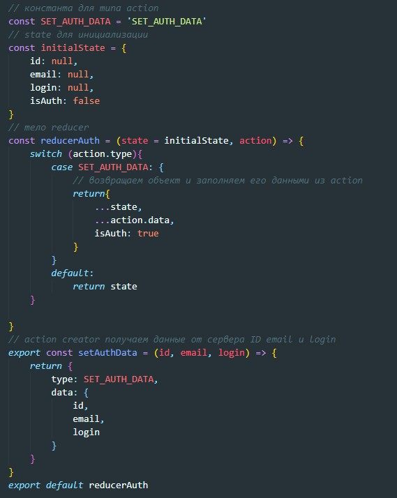

После того как мы ввели логин и пароль на сайте, сервер проверяет эти данные и если в БД произошло совпадение мы проходим логинизацию. После этого, когда мы открываем страницу с сообщениями или спискмо друзей, то мы видим именно те данные, которые соответствуют именно нашему акаунту. Как сервер понимает какие данные надо передавать в ответ на GET запрос? ID пользователя вместе с GET запросом мы послать не можем так как это не безопасно.
В браузере живет такая сущность которая называется cookie - по сути это текстовый файлик, который цепляется к запросам на сервер. Отправляя логин и пароль мы отправялем POST запрос к которому прицепляется cookie. Если логин и пароль проходят проверку в БД, то сервер записывает в cookie зашифрованный идентификатор и возвращает обратно.
Сколько времени живут cookie? Это зависит от того как решит сервер. Например мы можем поставить галочку "ЗАПОМНИТЬ МЕНЯ" и время жизни cookie будет хранится примерно месяц и каждый раз при заходе на сайт время жизни будет продлеваться еще на месяц.
Т.е. в итоге что мы имеем? каждый раз при отправлении запроса авторизованного пользователя к запросу будет цепляться cookie c зашифрованным идентификатором, сервер будет считывать его и выдавать данные которые соответствуют этому идентификатору.
Во время разработки приложения мы по факту используем два домена (два сервера)
1 - это сервер откуда запущено приложение, в нашем случае это live server - localhost
2 - это сервер куда мы отправляем запрсоы
В браузере cookie для каждого сервера свои собственные и получается так что localhost не получает в своих cookie идентификатор. Для этого сервер должен разрешать кросдоменные запросы.
Кросдоменный запрос - этотехнология в браузере, которая позволяет предоставить веб странице доступ к ресурсам другого домена
Браузер не отправляет Кросдоменные запросы автоматически, поэтому в GET запросе мы должны дополнительно указывать данные для такого запроса.
Начинаем с reducer
не забываем в redux добавить наш новый reducer
Далее создаем контейнерную компоненту
Отрисовываем все то что попало в state